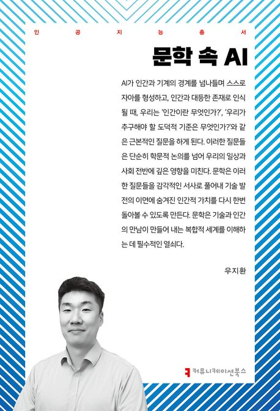
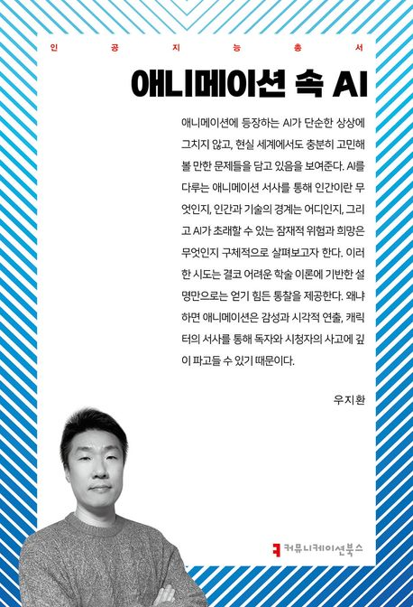
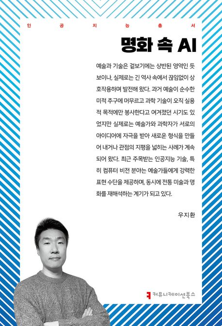
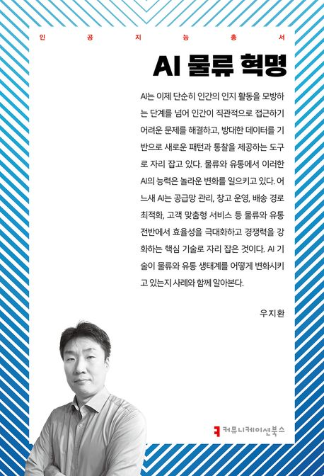

Physical AI — AI가 화면을 떠나 현실 세계로 나오다
ChatGPT는 커피 만드는 법을 설명하지만, Physical AI는 직접 커피를 내립니다. 50조 달러 물리 산업을 바꿀 기술을 쉽게 풀어봅니다.
2026
AI 기술을 비즈니스 가치로 전환하는 전략을 설계합니다
Ph.D · MBA · 작가 · AI R&D 리더 · KAIST · 고려대 겸임교수 · AI 기술 자문위원 · AI 과제 평가위원 · 기술거래사 · 기업기술가치평가사
AI Research & Engineering × Technology Strategy & Innovation × AI-driven Finance
Featured & Cited In
저는 세 가지 축이 교차하는 지점에서 연구하고 일합니다. KAIST에서 컴퓨터 비전으로 시작한 AI 연구·개발, 고려대에서 박사학위를 취득한 기술경영·혁신전략, 그리고 KAIST MBA를 기반으로 한 AI 기반 재무·금융 연구입니다. 이 세 영역의 융합을 통해 기술이 비즈니스 가치로 전환되는 과정을 설계하고 실행합니다.
AI를 도입하는 것만으로는 충분하지 않습니다.
어떤 문제를 풀 것인지, 왜 지금인지, 어떻게 조직에 내재화할 것인지 —
기술과 전략, 그리고 실행의 교차점에서 함께 답을 찾습니다.
"AI를 도입해야 하는데, 어디서부터 시작해야 할지 모르겠습니다."
제조, 금융, 유통, 물류 등 다양한 산업에서 AI 전환을 설계하고 실행해 왔습니다. 기술의 가능성과 조직의 현실 사이에서 실행 가능한 로드맵을 함께 만듭니다.
"이 기술이 정말 투자할 가치가 있는 건가요?"
CMU Robotics Institute에서의 연구 경험과 기술거래사·기업기술가치평가사 자격을 바탕으로, PEF·M&A 대상 기술가치평가와 AI/ML 아키텍처의 기술적 타당성 및 사업적 잠재력을 진단합니다.
"보유한 기술 자산의 가치를 객관적으로 알고 싶습니다."
기술경영 박사학위와 5개국 30건 이상의 특허 포트폴리오 경험을 바탕으로, 기술의 시장 가치를 정량적·정성적으로 평가합니다.
"조직 구성원들이 AI 시대의 변화를 체감할 수 있는 계기가 필요합니다."
KOITA, 대한상공회의소, KAIST 등에서 산업 리더와 실무자를 대상으로 AI 트렌드, 디지털 혁신 전략에 관한 강연을 해왔습니다. 청중의 맥락에 맞는 인사이트를 전달합니다.
"산업 동향을 정리한 신뢰할 수 있는 보고서가 필요합니다."
대한상의, 한국데이터산업진흥원, 소프트웨어정책연구소와 협업하여 유통·금융·소프트웨어 분야의 산업 백서를 작성해 왔습니다. 7권의 저서와 36편 이상의 논문이 리서치 역량을 뒷받침합니다.
국내 Top 3 시중은행에서 금융권 최초 신뢰할 수 있는 AI(Trustworthy AI) 연구 수행. 신용등급 이동에 대한 설명 가능한 AI 모델 개발, 연구 논문 DBPIA 이용 상위 5% 달성
국내 대형 유통·물류 그룹 AI 연구소장으로서 유통, 물류, 제조, 미디어/엔터 산업 전반에 AI 기반 Digital Transformation을 기획하고 수행
글로벌 전자기업 스마트폰 카메라 AI IP(CartoonShot) 개발·탑재. 스마트워치 UX/UI 제안이 Forbes에 'Next Display'로 소개
대한상공회의소·한국데이터산업진흥원·소프트웨어정책연구소 산업 백서 집필 (유통·금융·SW)
PEF·M&A 대상 기술가치평가 및 Technical Due Diligence 수행. 국가기술표준원 산업 AI 표준화 포럼 자문
KAIST·고려대 겸임교수 — AI 금융·기술경영 강의 (7년). 동아비즈니스리뷰(DBR)·KOITA 기술과혁신 기고
산업과 기술의 교차점에서 쓴 최근 글입니다.
ChatGPT는 커피 만드는 법을 설명하지만, Physical AI는 직접 커피를 내립니다. 50조 달러 물리 산업을 바꿀 기술을 쉽게 풀어봅니다.
2026OpenAI Codex 팀의 100만 줄 실험, LangChain의 25단계 도약. AI 에이전트 성능의 진짜 열쇠는 모델이 아니라 하네스에 있다.
2026구글이 공개한 KV 캐시 압축 기술의 원리와, 반도체부터 온디바이스까지 AI 밸류 체인 전체에 미칠 파급력을 분석합니다.
2026AI가 스크린을 벗어나 물리 세계로 나왔다. NVIDIA Physical AI, Zoox 로보택시 탑승기, 그리고 AI 전문가의 산업적 함의 분석.
2026딥러닝의 한계를 넘어, 논리적 추론과 설명 가능성을 갖춘 차세대 AI 패러다임의 부상과 산업적 함의를 분석합니다.
2025AI가 공급망 관리, 수요 예측, 배송 최적화를 어떻게 변화시키고 있는지 산업 사례와 함께 조망합니다.
2024기업의 디지털 전환 과정에서 AI가 어떤 역할을 하는지, 실행 전략과 조직 내재화 방안을 제시합니다.
2023기술의 깊이, 전략의 시야, 금융의 실용성 — 세 축의 교차점에서 연구합니다.
CS 기반 AI 연구·개발
컴퓨터 비전, 생성형 AI, LLM, 3D Point Cloud, HDR 등 핵심 AI 기술의 연구·개발과 산업 적용. Samsung Research에서 MPEG 표준화, CMU Robotics Institute 방문연구, AWS에서 클라우드 스케일 AI 아키텍처 설계까지.
기술경영 · 혁신전략
기술 가치평가, 디지털 트랜스포메이션, 오픈 이노베이션 전략 연구. 기술이 비즈니스 가치로 전환되는 메커니즘을 학문적으로 규명하고 산업 현장에서 실행합니다.
AI 기반 재무·금융 연구
AI/ML을 활용한 금융 예측, 신용평가, 설명 가능한 AI 프레임워크 등 핀테크 혁신 연구. 신한은행 AI Competency Center와 카카오뱅크에서의 실무 경험을 학술 연구로 연결합니다.
AI 기술력으로 무엇을 만들 수 있는지 알고, 기술경영으로 왜, 어떻게 가치를 만드는지 이해하며, 금융 도메인에서 실제 비즈니스 임팩트를 만들어냅니다. 현재 AWS에서 이 세 축의 융합을 통해 파트너와 고객의 AI 혁신을 가속하고 있습니다.
Amazon Web Services (AWS)
APJ 리전 AI/ML 혁신. 확장 가능한 AI 아키텍처 설계, 파트너 역량 강화, Thought Leadership.
CJ OliveNetworks
AI 연구소 총괄. CJ그룹 제조·유통·물류·미디어/엔터 사업 전반에 AI 적용 DX 실행. MLOps, Generative AI, LLM, 스마트 팩토리 데이터 분석. 정부 R&D 과제 수행.
Kakaobank
전략적 투자 프로세스 개발. No/Low Code, Quantum Computing 등 신기술 연구.
Shinhan Bank
금융권 최초 신뢰할 수 있는 AI(Trustworthy AI) 연구 수행. XAI 기반 신용등급 이동 설명 모델 개발, 연구 논문 DBPIA 이용 상위 5%. AI 오픈 이노베이션, 스타트업 Technical Due Diligence.
Samsung Electronics
차세대 멀티미디어 연구(Super Resolution, 3D PCC, HDR, SLAM). 스마트폰 카메라 AI IP(CartoonShot) 개발·탑재. 스마트워치 UX/UI 제안 — Forbes 'Samsung's Next Display'로 소개. 해외 연구센터 관리 및 오픈 이노베이션.
Carnegie Mellon University
Computer Vision 연구(Video Segmentation). 기술 스타트업 발굴 및 평가.
KAIST College of Business
Deep Learning for Finance 강의 및 AI 기반 핀테크 연구.
Korea University Graduate School of M.O.T
AI 중심 혁신 전략 강의. 벤처기업 기술 자문.
정보통신기획평가원 (IITP)
사업화 과제 평가위원
한국인터넷진흥원 (KISA)
정보통신산업진흥원 (NIPA)
중소기업기술정보진흥원 (TIPA)
중소기업기술개발 지원평가사업
한국데이터산업진흥원 (KData)
한국표준협회 (Korean Standards Association)
ISO/TC20/SC16 — UAV(무인항공기) 국제표준화 활동 한국 대표단
KOICA
도미니카공화국 스타트업 기술자문 — VR/AR, 3D Printing, 전기회로 시뮬레이션
디지털소사이어티
디지털 심화시대의 경제·사회 원칙과 디지털 질서에 대한 담론 형성




산업 현장과 학계를 잇는 강연 활동을 통해 AI 기술의 실질적 가치를 전달합니다.
KOITA 한국산업기술진흥협회 · 기술경영실무자 교육
디지털 물류와 유통 지능화를 중심으로, AI가 공급망 관리·수요 예측·배송 최적화를 어떻게 혁신하는지 산업 사례와 함께 분석.
제12회 유통산업주간 · 대한상공회의소
유통·물류 분야의 AI 혁신 동향과 소비 트렌드 변화를 조망하는 초청 강연.
KOITA 한국산업기술진흥협회 · 디지털 온라인 세미나 · 2025
기술기반 중소기업·스타트업·예비창업자 대상. Physical AI의 개념과 미래 산업 적용 가능성을 탐구하는 온라인 강연.
KAIST 경영대학 · 산업별 전문가 특강 시리즈 · 2024
생성형 AI 기술이 산업과 비즈니스를 어떻게 변화시키고 있는지, KAIST 경영대학 학생 대상 특별 강연.
KAIST 경영대학 · 디지털금융 특강 시리즈 · 2023
AI 네이티브 시대의 도래와 금융 산업에서의 AI 활용, 디지털 트랜스포메이션 전략을 다룬 특강.
KAIST · 2004–2009
KAIST · 2002–2004
KAIST · 1998–2002
Korea University · 2012–2019
기술혁신역량과 기술혁신성과의 결정요인에 대한 연구
📄 Dissertation (RISS)KAIST College of Business · 2020–2022
기고 의뢰, 강연 초청, 기술 자문, 공동 연구 등 문의 사항이 있으시면 연락주세요.
기고 주제 제안, 강연 일정 협의, 기술 자문 범위 논의 등 구체적인 내용을 함께 보내주시면 빠르게 회신드리겠습니다.